I suspect that calculus is a whole lot easier to understand than we are led to believe. The real question is whether
I can support this claim by teaching it in a comprehensible way. I'm gonna give it a go here. Hopefully you'll find
it more educational and less daunting.
Before I begin, I'd like to lay out what I understand to be the roadmap for a typical undergraduate Calc 1 course. I
see it as three basic steps:
- Intuition and justification
- Mathematical explanation for intuition
- Lots of rules
For the most part, I'm gonna skip step 3. Once you understand the mechanism for how calculus works (step 2), the rules
begin to fall into place. I'd like to spend much more time on the first two steps. Let's do it.
What is Speed?
The traditional method for explaining/justifying the need for calculus is to use the example of a car. Imagine you're
a drag racer. (If this is too thrilling, or you're particularly unimaginative, you can think of driving on the
freeway.) You're idling behind the starting line (or whatever the proper terms are for drag races--it's not within the
scope of this discussion) as the light blinks from red, to yellow, to green (see previous parenthetical). As it turns
green, you kick the car into gear and go roaring off down the track.
Let's suppose that 5 seconds after the race has begun, you glance down at the speedometer (do drag racers do this?)
and see that it reads 70 MPH. What does this mean? Well, quite literally it says that you are going seventy miles
every hour. Of course, the racetrack is nowhere near seventy miles long, so this number is really just an average. It's
telling you that, if you kept going at exactly the speed you are going right now for one hour, you would cover exactly
seventy miles.
Okay. This seems mostly fine. There's just one little question. What does "the speed you are going right now" really
mean? This isn't meant to be a stupid question. Think about it. How long is "right now?" It's not one second. That
would include a little bit of time before "right now". It isn't one tenth of a second. There's still a pesky little
bit of "back then" time. Clearly, it isn't any range of time, no matter how small. It's just one, very specific point
in time. It's as though we took a picture of the car. But if we just look at that picture of a car, it certainly isn't
moving. (You might object and suggest that the photo of the car really isn't one point in time, because the camera's
shutter takes some period of time to close, and so the picture really does capture movement--the car may appear
blurry--but let's take some liberties and ignore this issue.) So is "the speed you are going right now" zero? That
doesn't feel quite right.
Let's revisit what speed is. In the States, we typically think of speed as miles per hour. The civilized world measures
it in kilometers per hour. The scientific community says meters per second. No matter what you choose, you are stuck
with some form of distance per time. And each of these is fundamentally an average. And we want to know what happens
when that time component drops down to "right now." In other words, we want to know what speed means when the time
elapsed is zero. And not only that. We decided that that in the "right now" moment, the car isn't moving either. So,
after all that, we want to know what speed means when no movement has taken place and no time has passed. We want
\frac{0 m}{0 s}.
Clearly, this number is going to vary a lot depending on context. If we take a picture of a moving car, its speed at
this instantaneous moment in time ought to be very different from that of a parked car. Let's think of some of the ways
we might provide this context.
One approach might be to take two successive pictures of the car. Let's suppose we take one picture five seconds after
it has left the starting line, and a second two seconds later. Furthermore, let's make note of how far the car has
travelled when each photo is taken. This should help us establish some context for how quickly the car's position is
changing relative to time. And how quickly is its position changing? It's just the amount of distance covered divided
by the amount of time elapsed between those two photos. For example, let's say that the car had covered 200 meters
when the first photo was taken, and 300 meters when the second photo was taken. Then:
\frac{300m - 200m}{7s - 5s} = 50 \space m/s
What does this result tell us? It's saying that in the time between when the two photos were taken, the car's position
changed an average of 50 meters every second, or its average speed was 50 meters per second. It seems that providing
context to our one photo of the car has allowed us estimate its speed. This is useful, but it still doesn't tell us
the speed is it going "right now." We're still stuck guessing between "then" and "now." However, sometimes guesswork
can be insightful, so let's try to refine this estimate.
It seems that the closer in time that we take our photos, the more precise our approximations will become. With that
in mind, let's try taking our second photo just one second after the first. Now, the car has travelled 240 meters,
and so we find its average speed to be
\frac{240m - 200m}{6s - 5s} = 40 \space m/s.
Continuing this process, we might measure the car's progress after half a second, or a quarter second, or and eighth...
In fact, we would hope to get our two measurements as close as possible, while ensuring that they still differ by
some minute quantity (so as to avoid the dividing by zero complexity we encountered in equation (1)). Mathematicians,
being lazy creatures, have developed some symbols to summarize this process, and we shall introduce some of them here.
Let's begin with our variables for distance and time, which we shall represent with
s and
t, respectively. (We use
s rather than
d
because
d will be used to mean something else entirely, and we don't wish to confuse
ourselves.) Rather calculating the difference between two distances and times, we shall represent these differences
with the expressions
\Delta s and
\Delta t. (The symbol
\Delta is pronounced "delta" and can be thought to mean "change in.") Finally, to
communicate the idea that our two photos are taken nearer and nearer to each other, we shall say that we are looking
for "the limit as the change in time approaches zero," and symbolize this as
\lim_{\Delta t \to 0}. Putting all of this together, we may summarize our process for
guessing the car's instantaneous speed as
\lim_{\Delta t \to 0} \frac{\Delta s}{\Delta t}.
Great. So what actually is the car's instantaneous speed?
In order to answer that question, let's take a step back and more accurately define the motion of the car. We'll be
super precise and describe exactly how far it has travelled at every moment since leaving the starting line. For
simplicity's sake, let's assume that the car accelerates all the way to the finish line. (While this may not be
strictly true for drag racers, it will make the math simpler, so we'll let it slide.) Let's define the car's distance
travelled
s as
s = 8t^2.
While this equation isn't strictly accurate (we shall see that at the end of the race the car is going over 250 MPH),
it is good enough to illustrate the point. The equation is graphed below.

Let's note when we took photos of the car as two red points on this line: one at 5 seconds and the other at 7.

Recall that to find the average speed between when these photos were taken, we used the equation
\frac{s_1 - s_2}{t_1 - t_2}
where
s_n is the distance travelled when the n-th photo was taken and
t_n is the time when the n-th photo was taken. For those of us who remember a bit of high
school algebra, equation (6) might be familiar as the expression for the slope of a line passing through the points
(t_1, s_1) and
(t_2, s_2). What we are saying is that the
average speed of the car between two points in time can be represented as the slope of a line drawn between those two
points.

Just as before, we would like to know what happens when we move these two points closer and closer together. (Recall
that the nearer these points are, the better an approximation we have for the car's speed.) Let's do just that,
drawing each of the slopes (representing the speeds) onto our plot.

Although it is a little difficult to read, we can see that the nearer our points get, the better their slope approximates
the shape of the curve itself. This is increasingly obvious if we zoom in on the two nearest points, where we see the
slopes as nearly identical:

When, then, is the geometrical interpretation of "the speed right now?" It is the slope of the line that we get when
those two points converge. In other words, it is the slope of the line that intersects the curve at exactly one point.
Such a line is said to be tangent to the curve (or a tangent line) and every point on a continuous, smooth curve has
exactly one of these. So, the natural question becomes: "How can we find the slope of this tangent line at a given
point?" If we find this, we have found our instantaneous speed.
Finding the Slope of a Tangent Line
Let's revisit expression (4):
\lim_{\Delta t \to 0} \frac{\Delta s}{\Delta t}.
Remember that this means, "the limit as the change in time approaches zero of the change in distance divided by the
change in time," or, "the limit as the change in time approaches zero of the average velocity." How might we apply
this idea to our expression for the car's movement:
s = 8t^2?
Before, when estimating the velocity, we chose two specific points in time to get an average. Let's do the same thing,
but instead of picking numerical values (like 5 seconds and 7 seconds), we'll pick arbitrary points in time. We shall
call the point in time for which we wish to measure the instantaneous speed
t_0, and the
other point
t_0 + \Delta t. In this way, we may calculate the average speed over the
interval
\Delta t, for a
\Delta t of arbitrarily small size. Let's
apply this idea to expression (4).
What is
\Delta s in this expression? Recall that
\Delta s
describes the difference in distance between our two points in time. But what is the expression for this distance?
It's right there in equation (8)! We simply need to evaluate this equation at the points
t_0 and
t_0 + \Delta t. Doing so, we find that
\Delta s = 8(t_0 + \Delta t)^2 - 8 t_0^2.
Expanding and combining like terms in this expression leaves us with
\Delta s = 16 t_0 \Delta t + (\Delta t)^2.
Let's plug this result back into expression (4). (The denominator of expression (4) remains the same. In our case, we
have
\Delta t = (t_0 + \Delta t) - t_0 = \Delta t.) Doing so gives us
\lim_{\Delta t \to 0} \frac{16 t_0 \Delta t + (\Delta t)^2}{\Delta t}.
Let's cancel the
\Delta t's:
\lim_{\Delta t \to 0} 16 t_0 + \Delta t.
Now, before we do the crucial last step, let's review what it is we are looking at. The expression
16 t_0 + \Delta t gives us the average velocity of the car between the points in time
t_0 and
t_0 + \Delta t. We take "the limit as
t approaches zero" of this expression to determine increasing accurate estimations of the
instantaneous velocity of the car at time
t_0. Okay.
Let's let
t_0 go towards zero. Unlike before, this is achievable due to the fact that we no
longer have any
\Delta t's in the denominator. Setting
\Delta t
to zero, we get
16 t_0
an expression for the instantaneous velocity at time
t_0! Let's now take a moment to understand
what we have done geometrically.